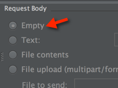
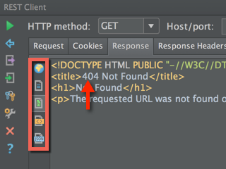
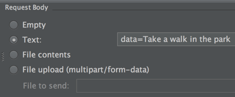
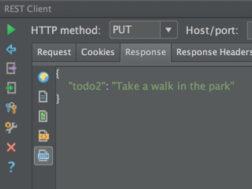

I've been trying out PyCharm's "Test RESTful Web Service" tool recently, just to check it out. I usually use
requests, httpie or curl if I have to use command line tools, but the tool I use most is
Advanced REST client.
Wanting to test out a sample API from Flask-Restful, I decided to take PyCharm's tool out for a spin. Here is the sample code from their quickstart page:
from flask import Flask, request
from flask.ext.restful import Resource, Api
app = Flask(__name__)
api = Api(app)
todos = {}
class TodoSimple(Resource):
def get(self, todo_id):
return {todo_id: todos[todo_id]}
def put(self, todo_id):
todos[todo_id] = request.form['data']
return {todo_id: todos[todo_id]}
api.add_resource(TodoSimple, '/<string:todo_id>')
if __name__ == '__main__':
app.run(debug=True)
GET requests are easy enough. You don't need to change anything from the defaults:
If you click the button indicated by the orange arrow, you will not have any query string in your URL. We will leave the request body empty:
After sending the request:
The client supports syntax highlighting for multiple formats, like html, json and xml. In
this case, html has been highlighted. You can also check out response headers in the adjacent tab.
PUT, POST and DELETE are just as easy, but they do not have the defaults that you'd expect.
For example, in requests, your content type is implicitly set for you to
application/x-www-form-urlencoded:
>>> import requests
>>> req = requests.put('http://127.0.0.1:5000/todo1',
data={'data': 'Make a tutorial on PyCharm\'s REST client' })
>>> req
<Response [200]>
>>> req.request.headers['Content-Type']
'application/x-www-form-urlencoded'
>>> req.content
'{\n "todo1": "Make a tutorial on PyCharm\'s REST client"\n}\n'
This took me some time to figure out in PyCharm's REST client. I knew I was doing something wrong,
but oddly enough it took me a while before I understood that it was because I had not set my content type in my
header. I think its because curl, requests and the chrome extension all set this implicitly for you.
The good news is that headers have code completion, but but not for values:
This time, we set the text to the following, since we want to add a new todo list item:
Voilà, our request succeeds:
You can do a lot more with the options that are available, like uploading from files, adding request parameters and setting cookies.
References
P.S.
This tool is also available in other jetbrains IDEs as well, like webstorm and intellij.